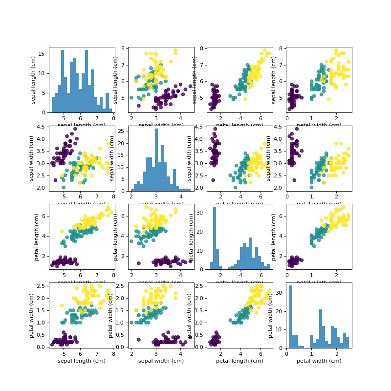

TASK 4¶
#!/usr/bin/env python3
# -*- coding: utf-8 -*-
"""
Created on Tue Feb 7 16:35:03 2017
@author: weiweiwang
"""
from matplotlib import pyplot as plt
import numpy as np
from sklearn import datasets
iris = datasets.load_iris()
# create dataframe from data in X_train
# label the columns using the strings in iris_dataset.feature_names iris_dataframe = pd.DataFrame(X_train, columns=iris_dataset.feature_names)
# create a scatter matrix from the dataframe, color by y_train
#grr = pd.scatter_matrix(iris_dataframe, c=y_train, figsize=(15, 15), marker='o',
# hist_kwds={'bins': 20}, s=60, alpha=.8, cmap=mglearn.cm3)
#% matplotlib inline
X = iris.data
y = iris.target
X_name = iris.feature_names
y_name = iris.target_names
fig, axes = plt.subplots(nrows=4, ncols=4, figsize=(10,10))
for i in [0,1,2,3]:
for j in [0,1,2,3]:
if i==j:
axes[i,j].hist(X[:,i],bins = 20, alpha = 0.8)
axes[i,j].set_xlabel(X_name[i])
axes[i,j].set_ylabel(X_name[i])
else:
axes[i,j].scatter(X[:,j],X[:,i],c=y,marker = "o", alpha = 0.8)
axes[i,j].set_xlabel(X_name[j])
axes[i,j].set_ylabel(X_name[i])
(Source code, png, hires.png, pdf)
{kind=link}
{kind=link}
